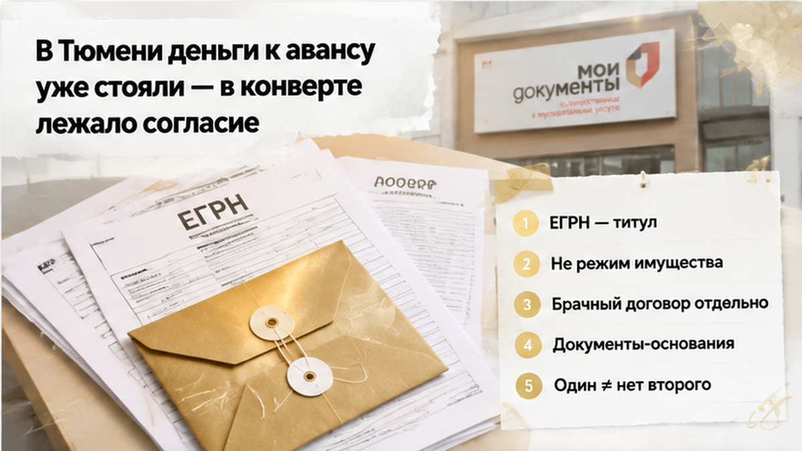
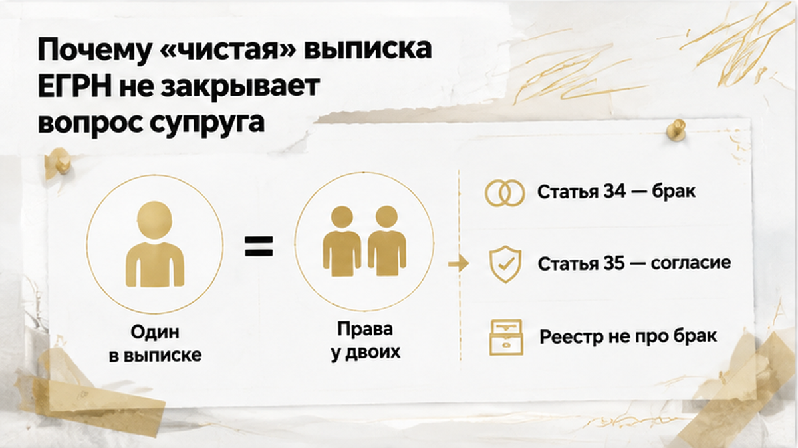
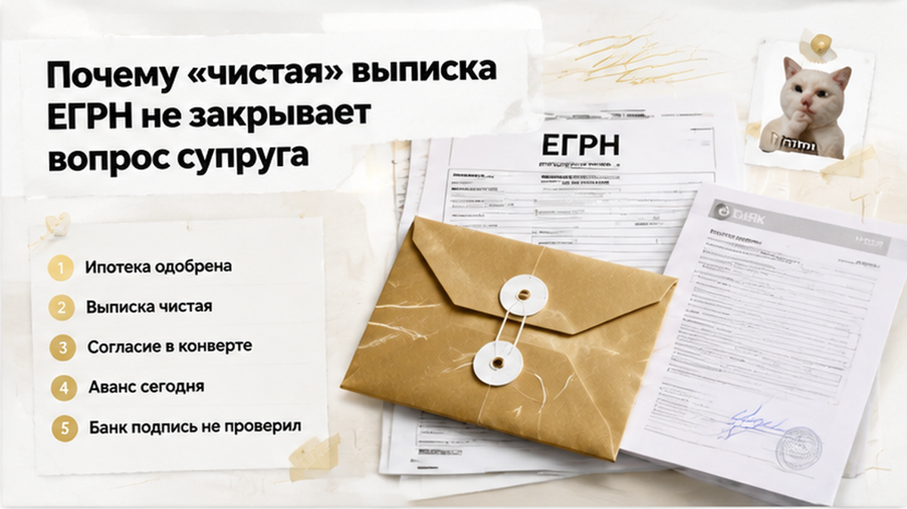
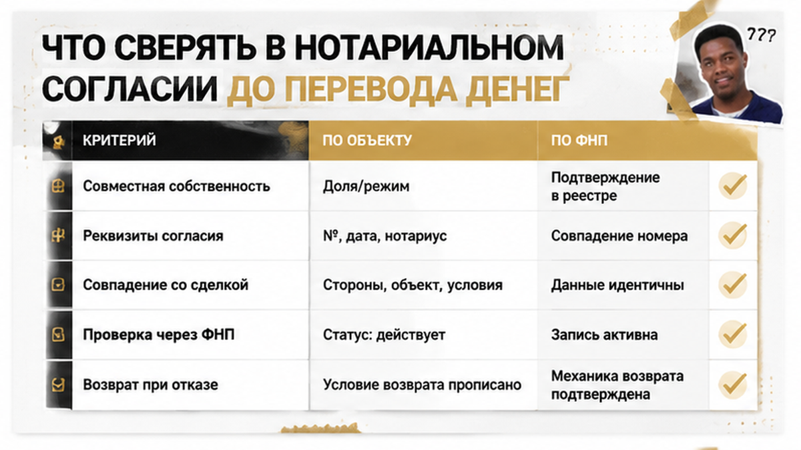
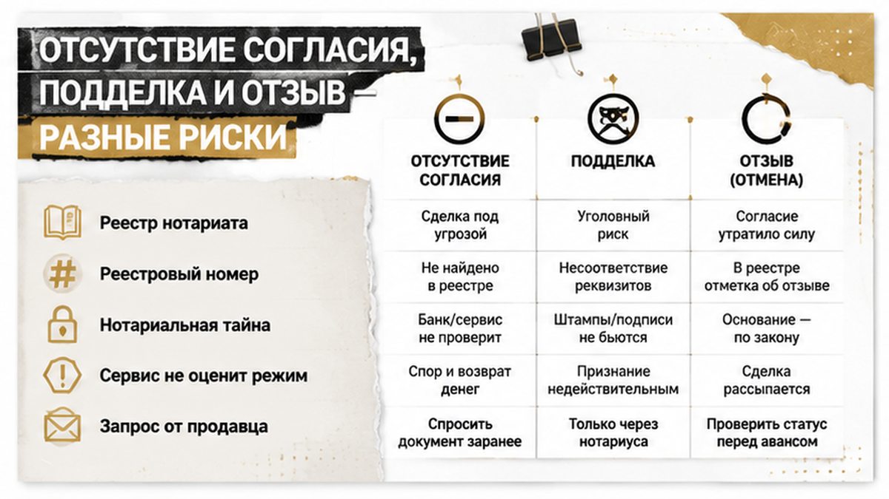
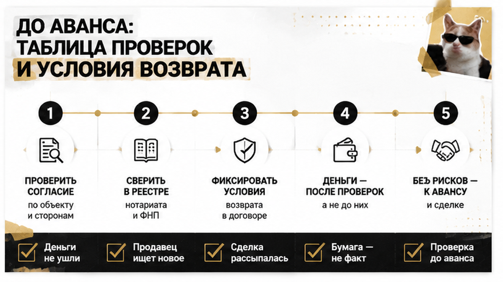

Аванс за тюменскую квартиру в тот день так и не ушёл продавцу. Всё остановил один лист бумаги, который лежал в конверте и до последней минуты всех устраивал.
К встрече всё выглядело собранным: ипотеку покупателю одобрили, свежая выписка ЕГРН показывала одного собственника и ни одной пометки, цена и дата согласованы. Продавец подгонял — «ипотека же одобрена», «аванс сегодня, иначе уйдёт другому», — а на вопрос про супругу спокойно достал конверт: нотариальное согласие внутри, всё оформлено. Перед самым переводом денег согласие наконец рассмотрели внимательно, и подтвердить его подлинность и пригодность для этой конкретной сделки на месте не вышло. Банк не повёл выдачу дальше, риэлтор остановил передачу аванса — не потому, что кого-то обвинили, а потому что документ не подтвердили. Покупатели деньги не перечислили, продавец уехал оформлять новое согласие, и сделка в тот день рассыпалась.
Разбираю как редакционный случай — без имён, адреса и сумм. Драма здесь не главное. Главное — точка, в которой всё встало: за пять минут до денег.
Я Святослав Шакин, The Риэлтор, Тюмень. Разбираю такие сделки до аванса, а не после. Если у вас на руках чужие документы и мало времени — напишите, посмотрим вместе: Telegram или MAX.

Покупатель шёл по аккуратному сценарию. Одобрение банка. «Чистая» выписка. Договорённость о цене и авансе, чтобы квартиру сняли с показов. На этом месте люди обычно выдыхают: кажется, тяжёлое позади.
Логика понятная, но она стоит на подмене. Будто если два больших института сказали «да», значит, кто-то проверил все документы, которые лягут в папку.
Не проверил. Одобрение ипотеки — это соответствие заёмщика и объекта требованиям банка, а не почерковедческая экспертиза каждой нотариальной подписи в пакете. Банк действительно может остановить выдачу и на финале, если в бумагах всплывёт проблема; я такие остановки видел не раз — в том числе когда одобренная ипотека не закрыла вопрос к документам по объекту. Только вот аванс покупатель платит своими деньгами и заметно раньше, чем банк дойдёт до этой стадии.
Вопрос про супругу здесь, кстати, задали. Это уже больше, чем делают многие. Но конверт никто толком не раскрывал: документ есть, нотариус есть, галочка поставлена. Ощущение закрытого пункта возникло раньше, чем пункт был закрыт.
И сверху давило время. «Аванс сегодня» — самая рабочая фраза на тюменской вторичке: она одним движением переводит разговор из проверки в гонку. Когда человек боится потерять квартиру, он перестаёт задавать неудобные вопросы к бумаге, которая лежит прямо перед ним. В сезон, когда ликвидные варианты уходят за выходные, это работает почти безотказно.
Сомнения появились ровно на пороге — когда согласие стали читать, а не констатировать по факту наличия. Вопросы были не к личности продавца, а к самому документу: относится ли он к этой сделке, подтверждается ли как нотариальное действие, годится ли в том виде, в каком лежит в конверте.
Оговорюсь, чтобы никого не оговорить. Подделку здесь никто не устанавливал. Установленная подделка — это результат экспертизы и разбирательства, а не мнение сторон в кабинете. Ситуация была другая, куда более частая: подлинность и пригодность документа не подтвердили. Этого хватило, чтобы не двигаться дальше.
Решение приняли те, у кого на руках была ответственность за деньги. Банк притормозил выдачу, риэлтор остановил передачу аванса. Продавец спорить не стал и уехал за новым согласием — шаг разумный, но сделку того дня он уже не спасал. Дальше сработала обычная механика вторички: сроки поехали, договорённости расползлись. Со стороны это выглядело как неудача: потерянное время, снова поиск, снова показы. По факту это была лучшая из доступных развязок — деньги остались на счёте, а не превратились в переписку с формулировкой «верните аванс».
Тот же принцип, который я повторяю в каждом разборе: бумага в руках не равна подтверждённому факту. Документ существует физически — это ещё не значит, что он подтверждается в системе, относится к вашей сделке и закрывает права второго человека. Пока он не проверен, это обещание, а не гарантия.
И была ещё одна тихая деталь, из-за которой история вообще стала возможной. Все были уверены, что «чистая» выписка ЕГРН вопрос по супруге уже сняла. Не сняла.


Выписка из ЕГРН отвечает ровно на один вопрос: кто записан собственником и что висит на объекте. Про брак, про режим имущества, про второго человека с правами — ни строчки. В реестре может стоять один собственник, а прав на квартиру у двоих.
По статье 34 Семейного кодекса нажитое в браке — совместная собственность. Неважно, на чьё имя оформлено и кто вносил деньги. Реестр фиксирует титул, а не режим. Поэтому «в выписке один собственник» и «второго претендента нет» — два разных утверждения, и второе из первого не вытекает.
Дальше статья 35 Семейного кодекса: для сделок с недвижимостью, подлежащих нотариальному удостоверению или регистрации, нужно нотариально удостоверенное согласие второго супруга. Вот почему в конверте у продавца вообще что-то лежало. Бумага там не «для банка» и не для красоты.
Но и обратное неверно: не любая квартира, оформленная на одного супруга, требует согласия второго. Значение имеет, когда и на каком основании объект появился — до брака или в браке, куплен или получен в дар и по наследству, есть ли брачный договор. Это читается по документам-основаниям, а не по фразе «мы этот вопрос давно закрыли». Разбор с тем же нервом у меня уже был: права супруга всплыли перед авансом при идеально «чистых» справках — вход другой, механика та же.
Отсюда и правильный вопрос к продавцу. Не «где бумажка», а «применим ли к этой квартире режим совместной собственности — и если да, чем он закрыт». Обычный покупатель смотрит на выписку и выдыхает. Тот, кто ведёт сделку профессионально, смотрит на договор, по которому квартира когда-то была куплена.

Согласие супруга — не «бумажка с печатью», а нотариальный акт с реквизитами, которые можно сопоставить. Половина вопросов снимается за пять минут вдумчивого чтения, ещё до всяких сервисов. По бумажному согласию иду по порядку:
Дальше реестр. Если на документе есть QR-код, он проверяется через сервис Федеральной нотариальной палаты: согласия супругов на отчуждение входят в перечень нотариальных документов с машиночитаемой меткой. Электронное согласие проверяется на provend.notariat.ru — по реестровому номеру, фамилии нотариуса и дате действия. Сервис подтвердит, что документ с такими данными в системе есть. И на этом остановится: режим имущества супругов и пригодность согласия для вашей сделки он за вас не оценит.
Прямой звонок нотариусу работает хуже, чем принято думать. Сведения о совершённом действии — нотариальная тайна, постороннему по телефону их раскрывать не обязаны. Запрос уместен от участника сделки или его представителя, и корректнее всего закрывать этот шаг через самого продавца: бумагу принёс он, ему и подтверждать.
Ещё один живучий миф — «согласие действует три месяца». Универсального срока нет. Согласие привязано к конкретной сделке и её условиям: сменился покупатель, поменялась цена, переиграли расчёты — и документ недельной свежести может уже не подходить. Дату на бланке смотрят не для того, чтобы считать месяцы, а чтобы понять, подо что он выдавался.
Сводится всё к одной строчке. Документ на руках и подтверждённый факт — разные состояния. Пока реквизиты не сошлись с вашей сделкой и не подтвердились по реестру, в конверте лежит просто лист бумаги.

В разговорах это сваливают в одну кучу: «с согласием что-то не так». Сценариев на самом деле четыре, и лечатся они по-разному.
Согласия нет вообще, а режим совместной собственности к квартире применим. Согласие есть, но оно не про эту сделку — другой объект, другой вид отчуждения, другие условия. Согласие когда-то выдали, а супруг его отозвал. И четвёртый вариант — тот самый, тюменский: подлинность не подтвердили. Это не синоним слова «подделали». Фальсификация доказывается отдельно, вплоть до почерковедческой экспертизы, и говорить о ней вправе суд, а не участники сделки в переписке.
Правовая механика у этих четырёх тоже разная. Супруг, чьи права нарушены, вправе оспорить сделку по статье 173.1 ГК РФ — в течение года с того дня, когда узнал или должен был узнать о ней. «Оспоримая» значит, что недействительной её ещё нужно признать в суде, доказав обстоятельства: автоматической ничтожности и мгновенного изъятия квартиры у покупателя здесь нет.
Зато есть год заседаний, обеспечительные меры и перепродажа, которая не двинется с места. Ради того, чтобы этого не случилось, и тратят один вечер до аванса.
И ещё одно, что стоит держать в голове: не любая квартира, оформленная на одного супруга, требует согласия второго. Значение имеют время приобретения, брачный договор, личный характер имущества — дарение, наследство. Поэтому правильный вопрос звучит не «где бумажка», а «применим ли к этой квартире режим совместной собственности и чем он закрыт». Ответ дают документы-основания. Не выписка и не слово продавца.

Собрал то, что реально делается за вечер до перевода денег. Колонки разделил специально: одно дело — чем факт подтверждается, другое — что подтверждением не является, третье — как это ложится в текст соглашения об авансе.
| Что выясняем | Чем подтверждаем до аванса | Что подтверждением не считается | Формулировка в соглашении об авансе |
|---|---|---|---|
| Применим ли режим совместной собственности | Документы-основания: когда и как приобретена квартира, наличие брачного договора | «Чистая» выписка ЕГРН с одним собственником | Продавец подтверждает семейное положение на дату приобретения и на дату сделки |
| Реквизиты нотариального согласия | ФИО нотариуса, округ и адрес конторы, дата и регистрационный номер нотариального действия, подпись, печать | Слова «согласие в конверте, всё нотариально» | Реквизиты согласия вписаны в текст как условие сделки |
| Совпадение с этой сделкой | Описание объекта, вид отчуждения, продавец и условия — сверены с проектом договора | Согласие «на продажу вообще», выданное под другую сделку | Аванс вносится под конкретный объект и конкретные условия расчётов |
| Подлинность документа | QR-маркировка через сервис ФНП, реестровый номер и дата на provend.notariat.ru | Одобрение ипотеки и фраза «банк всё проверил» | Срок, до которого подтверждение должно быть получено |
| Что будет, если не подтвердится | Заранее оговорённый порядок возврата денег | Устное «конечно, вернём» | Аванс возвращается в полном объёме, если действительное согласие не представлено |
Про сервисы — коротко. Они подтверждают данные документа в пределах системы: есть ли такое нотариальное действие с такими реквизитами. Они не расскажут ни о содержании вашей сделки, ни об отзыве согласия, ни о режиме имущества супругов. А обращение к нотариусу идёт от участника сделки или его представителя — это обычная процедура, а не «недоверие к продавцу».
Самое дорогое в этой цепочке — момент, когда деньги ушли раньше, чем сделка закрылась. Я разбирал такую историю: расписку написали, а денег на счёте нет. Соглашение об авансе — единственная бумага, которая работает на покупателя в момент, когда что-то пошло не так. Поэтому условие возврата в нём пишут заранее, а не досочиняют по факту.
Мне интересно, как поступаете вы. Если согласие супруга лежит в конверте — вы всё равно вносите аванс или ждёте проверки у нотариуса в день сделки? Напишите в комментариях: сколько раз вы просили подтвердить документ и как на это реагировал продавец.
Смотрите вторичку в Тюмени и в папке продавца лежит нотариальное согласие — пришлите реквизиты, скажу, что сверить до аванса. Telegram или MAX, отвечаю обычно быстро.
Та тюменская история закончилась нормально по одной причине: сомнения возникли до перевода денег. Покупатели потеряли выбранную квартиру и месяц времени — но не аванс и не спокойный следующий год. Вечер, потраченный на реквизиты, сработал ровно тогда, когда был нужен.
Вторичку в Тюмени покупают каждый день, и большинство сделок проходит ровно. Разница между спокойной сделкой и судебным годом — сверенные до аванса реквизиты нотариального согласия и одна фраза о возврате в соглашении. Ручка остаётся у вас: деньги уходят после подтверждения документа, а не до него. Нажать «отправить» раньше вас никто не заставит — ни «ипотека одобрена», ни «аванс сегодня», ни конверт на столе.
Материал проверен: Святослав Шакин, личный риэлтор в Тюмени. Ориентир для покупателя, не индивидуальная юридическая консультация.